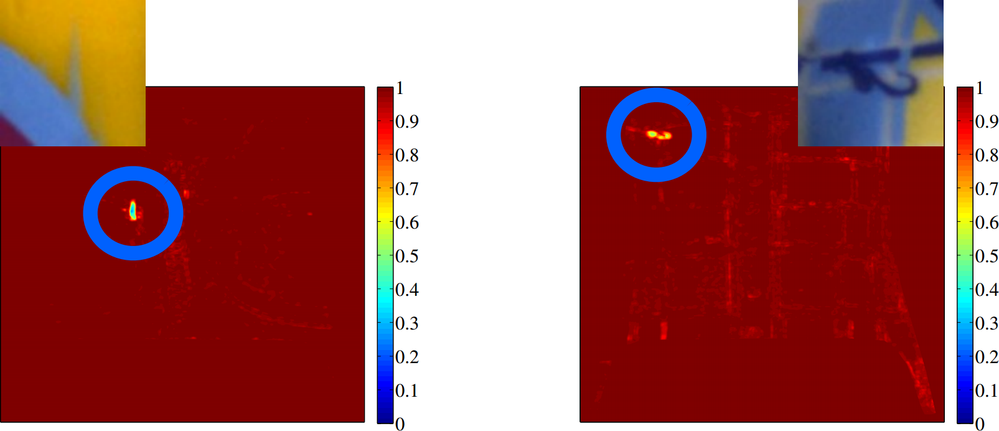
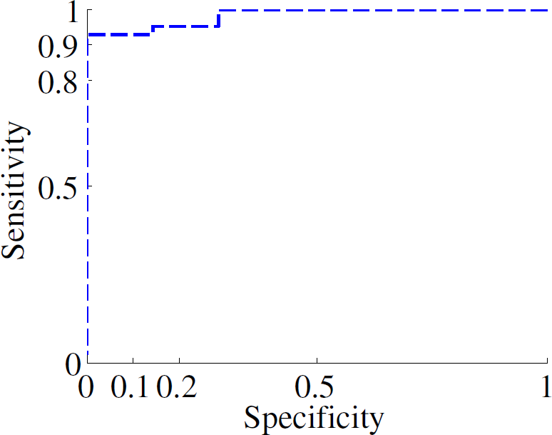
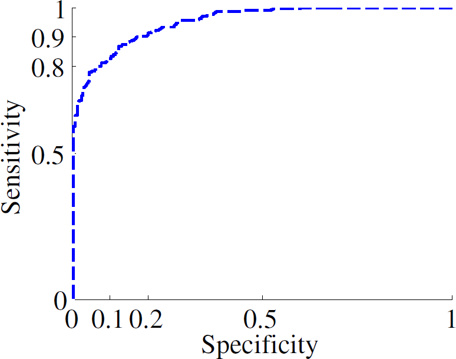

Contact
-
 Say hi
Say hi
- LinkedInGet to know me professionally
Current
- For my job at Target Holding I think about and implement machine learning problems using in particular scikit-learn and theano in python 3.
Recent
-
MSc thesis Some apples are rotten, others just appear different. Regardless of nutritious value, we decide whether or not to buy one based on appearance or perceptual quality. Therefore, since the 80's, computer vision based techniques were developed to assess the quality of different fruits. But it is not just food we care about. Fabric, electronics and probably every product we buy needs to adhere to some functional and perceptual standard. Automated processes are expensive to develop, yet when they are developed, they replace subjective, easily fatigued, expensive and relatively slow manual labor. Moreover, an economic and competitive implementation of manual quality inspection may create inferior or even inhuman working conditions, as was recently documented for several electronics companies by the BBC.
For my thesis I proposed the use of perceptual image quality measures for automated industrial quality inspection. Such measures mimic human perception to quantify the similarity of images of the same object, and are used to assess lossy image compression techniques. To the best of our knowledge, these measures were not yet used for industrial quality inspection. I propose a pipeline that, among other techniques, uses the structural similarity for the particular use case of Playmobil toy figures. To improve generalization I used a vector-space representation to approximate the space of acceptable toy figures. And to respond robustly to noise our method trades the size and severity of all deviations.
The images below show two paint defects, zoomed in, and the heat maps which located these defects. That is, the defects are marked by low values, around 0.5 or lower, and the regions where no defects exist are marked by high values near 1.

The thesis demonstrate the effectiveness of the proposed approach by evaluating it on a combined data set that consists of images provided by Playmobil (Malta) and synthetically created images. The pipeline is effective for different toy figure types, with different colors and patterns, suggesting successful application for other perceptual quality inspection use cases as well.
 
The images above indicate the performance of the classification system for real (left) and artificially created (right) samples and are discussed in figure 4.9 of my thesis. If you are interested, feel free to read my thesis here, or if you prefer watching images you can have a look at my defense slides here. - Scientic internship As part of an internship at my university, I worked on a project which investigates some possibilities of time series analysis. The basic idea is to segment a time series and classify each segment as a symbol, indicating the direction (up or down) and shape (curved or straight). This approach is similar to PLR (piece-wise linear representation), however it is symbolic, allowing for post processing using different data structures and algorithms which are only suitable for discrete data. Moreover, our representation detects flat parts based on a signal to noise heuristic. There is a paper describing this work, which will be published at the ESANN 2014 conference under the title "Segmented shape-symbolic time series representation." Find the published version here, a longer, easier to read version here and a paper comparing different segment representation and segmentation techniques here.
-
Machine learning course Together with three other students I programmed a neural network based tetris agent. Read all about it in this paper and grab the source code here.
First two images are on a simple set using a single layer neural network, the last images uses the El-Tetris algoritm:


- Studentcolloquium 2013 Together with a fellow students I wrote a paper about the SAX time series representation, stating with empirical evidence that the assumption that time series data is distributed normally is not necessarily true. The paper was printed via this document. A jury consisting of the teachers of a related course rated our paper best out of nine.
-
Multi-agent systems course As a student project, together with two fellow students I programmed a dynamic epistemic model for the game 'Weervolwen van Wakkerdam', for a web page with information go here.


-
Bachelor thesis For my bachelor thesis I wrote a program to detect annual rings in section planes of tree trunks. The source, a report (dutch) and a presentation (dutch). This was my first scientific writing, I am aware of the problems that exist in the text.
Finding the heart of the tree using connected components and geometry:


Finding the annual rings of the tree using connected components and seam carving:


Perio*diek
- The Periodiek is a magazine published by the FMF, a study association for Physics and Math. I wrote some articles:
- Separation Logic
- Tax me if you can
- Geld en krediet
- Te Paard
- Zoeken naar de grens van UV
- Graven naar goedkoope kaartjes
- Graven naar tijden
Msc Computing Science
-
I finished these courses for my Msc Computing Science at the RuG:
Course Grade Comment Machine Learning 8 Wrote a paper and programmed a Tetris agent, see above. Web & Cloud Computing 8 Did a news reader project in Google App Engine. Pattern Recognition 8.5 Gave a presentation on eigenfaces. Automated Reasoning 9.5 Image Processing 9 Student Colloquium 8.5 Received best paper award. Multi-agent systems 9 See the Wakkerdam project above. Applied Signal Processing 8.5 Dynamic Logic 9 Presentation on separation logic, click here for slides Geometric Algorithms 8 Computer Vision 9 Probleemoplossen met Mathematica 9 Moddeling and simulation 9 Neural networks 9.5 Computational Physics 8 Scientific internship (semi-thesis) 9 Together with Micheal Biehl and Ioannis Giotis I published a paper in the ESANN 2014 conference. MSc thesis 7 My thesis can be found here
Work
- In the past I have worked as a web programmer for Worldticketshop, as a student assistant for the Computing Science department of the University of Groningen and as a developer of a search engine at the University Library in Groningen. For more details check my page on linkedin.